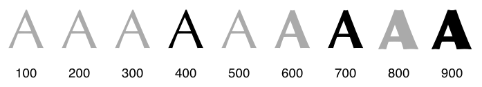
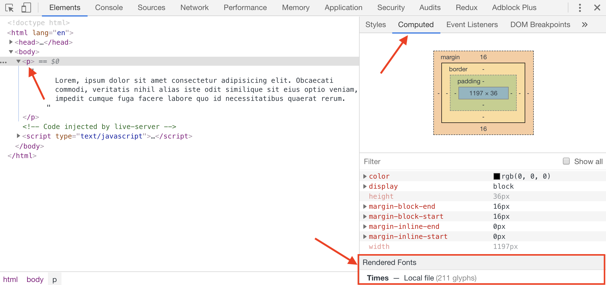
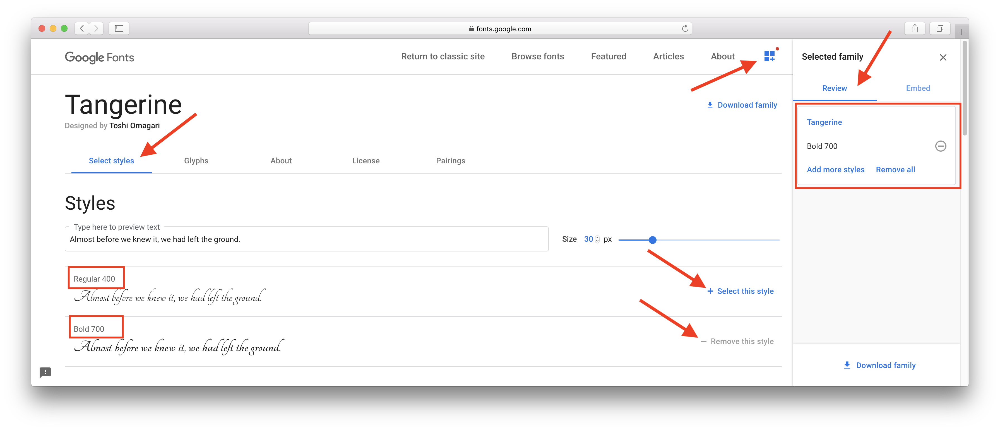
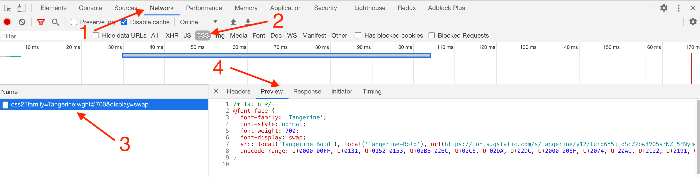

Текст и шрифт
Свойство text-transform
Управляет регистром символов в тексте, например сделать все буквы заглавными или прописными. В разметке текст всегда набирается согласно правилам языка. После чего, при помощи text-transform, приводится к нужному виду, потому что всё оформление должно быть в CSS.
Создадим разметку меню навигации, текст пунктов которой в макете нарисован заглавными буквами.
Теперь в стилях делаем все буквы текста ссылок заглавными.
Свойство text-align
Управляет выравниванием текстового содержимого элемента по горизонтали.
По умолчанию текст выравнивается по левому краю (значение left).
Центриуерм текст заголовка и выравняем текст абзацев по правому краю и равномерно.
ВНИМАНИЕ
Использование значения justify не самая лучшая идея. Хотя текст и прижимается к левой и правой границе блока равномерно, его читабельность сильно падает. Всё потому, что пробелы между словами становятся разной ширины, а это негативно влияет на восприятие текста.
Свойство text-indent
Устанавливает величину отступа первой строки блока текста, например абзаца. Не влияет на все остальные строки кроме первой.
В качестве значений принимаются любые единицы длины, например пиксели (px). При задании значения в процентах, отступ вычисляется в зависимости от ширины блока.
Свойство line-height
Устанавливает межстрочный интервал (интерлиньяж, высоту строки) текста. По умолчанию расстояние между строками зависит от вида шрифта и его размеров, и определяется браузером автоматически.
Значение можно задавать абсолютными или относительными единицами и множителем. Лучше всего устанавливать значение в виде множителя, тогда интерлиньяж рассчитывается от текущего размера шрифта текста.
Например, если в макете размер шрифта 16px а интерлиньяж 24px, просто делим 24 на 16 и получаем множитель 1.5. Использование множителя гарантирует равномерное масштабирование межстрочного интервала при изменении размера текста.
Свойство letter-spacing
Определяет интервал между символами. По умолчанию расстояние между символами устанавливается исходя из типа и вида шрифта, его размеров и настроек операционной системы.
Иногда дизайнеры устанавливают нестандартное значение межсимвольного расстояния, и именно для этого существует свойство letter-spacing.
Для наглядности зададим большие значения letter-spacing тексту заголовка и абзаца.
Свойство word-spacing
Определяет интервал между словами. По умолчанию расстояние между словами устанавливается исходя из типа и вида шрифта, его размеров и настроек операционной системы.
ИНТЕРЕСНО
Свойство word-spacing относится к группе свойств оформления текста, которые применяются довольно редко.
Свойство text-shadow
Контролирует тень текста, а также устанавливает её параметры: цвет, смещение и радиус размытия.
- цвет - задаётся в любом формате. По умолчанию цвет тени совпадает с цветом текста.
- смещение по x - сдвиг тени по горизонтали относительно текста. Положительное значение задает сдвиг тени вправо, отрицательное - влево.
- смещение по y - сдвиг тени по вертикали относительно текста. Положительное значение задает сдвиг тени вниз, отрицательное - вверх.
- радиус размытия - чем больше значение, тем сильнее тень размывается и становится светлее. По умолчанию, если не задан, будет равен 0.
Сделаем белый текст с тёмной тенью. Для этого установим смещение по осям X и Y в 2px, радиус размытия 4px и чёрный цвет тени.
Многослойная тень
На один элемент можно добавить несколько теней, указав их через запятую. Получается многослойный пирог из теней.
Порядок отображения следующий - первая тень в списке размещается на самом верху, последняя - в самом низу. То есть, чем раньше указана тень, тем выше она в слоях, и будет визуально перекрывать все последующие.
Свойство font-weight
Контролирует толщину начертания (жирность, вес) букв шрифта. Значение свойства можно задавать набором зарезервированных слов или цифрами от 100 до 900 с шагом в 100, которые задают степень толщины глифа от тонкого 100 до толстого 900.
Ключевые слова привязаны к цифрам, например normal - это 400, а bold - это 700. В разработке используются только цифры, из-за возможности задать одинаково точный вес во всех браузерах.
По умолчанию, вес шрифта абзацев, который установлен в таблице стилей браузера, равен 400, а вес заголовков 700.
Свойство font-family
Шрифт — это набор типографских литер, цифр и специальных знаков определенного стиля для набора текста.
Шрифты делят на несколько основных групп (семейств): шрифты с засечками (serif), шрифты без засечек (sans-serif), моноширинные (monospace), декоративные и рукописные. MacOS, Linux и Windows содержат набор стандартных шрифтов из каждого семейства. По умолчанию, если никакой другой шрифт не задан, браузер использует Times New Roman из семейства с засечками (serif).
Посмотреть каким шрифтом отрисован текст элемента можно в инструментах разработчика на вкладке Computed.
Свойство font-family задаёт шрифт текста элемента. Через запятую можно перечислить произвольное количество шрифтов, которые браузер, в порядке слева направо, попытается найти в системе пользователя и применить первый найденный.
В конце списка всегда указывается семейство шрифтов, на тот случай если ни одного перечисленного шрифта не найдено. Тогда применится стандартный шрифт из этого семейства, который есть в системе пользователя.
Псевдоэлемент ::first-letter
Управляет стилем первого символа в тексте элемента, к которому добавляется. К этому псевдоэлементу можно применить только свойства оформления шрифта, цвета, фона, а также геометрии элемента.
Например, можно выделить первые буквы каждого абзаца стихотворения.
Добавим стили для псевдоэлемента ::first-letter тега pre. Изменим шрифт, размер шрифта и цвет.
Нестандартные шрифты
Шрифт помогает сделать сайт ярким и запоминающимся. Миллионы сайтов с одним шрифтом «Times New Roman» были бы, наверное, слишком скучны. Поэтому дизайнеры создают свои шрифты, а разработчики могут использовать их в проектах.
ИНТЕРЕСНО
Шрифты делятся на платные и бесплатные. Лицензию платного шрифта необходимо покупать, а использовать его без лицензии чревато нарушением авторских прав. Есть много красивых бесплатных шрифтов, которые находятся в общем доступе.
Сервис Google Fonts
Google Fonts это хранилище огромного количества бесплатных шрифтов. Всё что необходимо сделать, это найти понравившийся шрифт, получить на него ссылку и подключить в своём HTML-файле как еще одну таблицу стилей.
Скопируйте и вставьте следующий HTML-код в свой файл разметки и откройте страницу в браузере. Текст, отрисованный нестандартным шрифтом, не отличается ничем, кроме внешнего вида, поэтому для его оформления можно использовать любые CSS-свойства.
Для того, чтобы подключить нестандартный бесплатный шрифт с сервиса Google Fonts, переходим по ссылке и попадаем на страницу поиска .

Можно пролистывать галерею шрифтов и искать понравившийся, или, если имя шрифта известно, ввести его в поле поиска и нажать на карточку шрифта.

На странице шрифта выбираем необходимый вес. Выбирать все доступные жирности не нужно, чем больше вариантов, тем тяжелее будет файл шрифта, и тем дольше будет загружаться ваша веб-страница. Тоже самое и с количеством шрифтов, обычно ограничиваются одним, максимум двумя шрифтами для всего сайта.
ВНИМАНИЕ
Не все шрифты поддерживают полный диапазон жирностей (от 100 до 900) и начертаний (стандартный или курсив). Дизайнер создаёт набор самых популярных значений. Если шрифт не поддерживает определённый вес, браузер будет отрисовывать его ближайшей доступной жирностью.
Нам нужен только вес 700, потому что мы подключаем шрифт для заголовков.
На вкладке Embed копируем тег <link>, в котором указана ссылка на таблицу стилей шрифта, и добавляем её в шапку своего HTML-документа, перед остальными стилями.

Теперь в файле стилей можно использовать шрифт Tangerine указав его в свойстве font-family.
Директива @font-face
Давайте разберёмся что именно мы подключили к HTML-документу в прошлой секции.
- Открываем инструменты разработчика и переходим на вкладку «Network».
- Выбираем фильтр «CSS», чтобы отображались только файлы стилей.
- Кликаем по файлу от Google Fonts.
- Выбираем вкладку «Preview», в которой отображается содержимое файла.
Итак, Google Fonts вернул нам самый обычный CSS-файл, в котором есть директива @font-face - объявление шрифта. Эта директива позволяет указать параметры подключаемого шрифта.
- font-family - локальное имя для использования в нашем CSS-коде.
- font-style - тип начертаний (обычный, курсив и т. п.).
- font-weight - вес подключаемого шрифта.
- font-display - управляет отображеним текста во время загрузки шрифта.
- src - ссылка на сам файл шрифта и уточнение его типа, обычно woff или woff2. В нашем случае файл шрифта лежит на серверах Google, но это может быть и локальный шрифт, который хранится в файлах проекта.
- unicode-range - указывает набор необходимых символов в шрифте из таблицы символов Unicode . Загружать все символы излишне, чем их меньше, тем быстрее загрузится шрифт.
ПОЛЕЗНО
Все известные человечеству символы (языков, математические знаки и т. п.) собраны и описаны стандартом, называемым Unicode, в котором каждый символ имеет имя (например, «latin capital letter a») и код (code point) — число от 0 до 10FFFF.